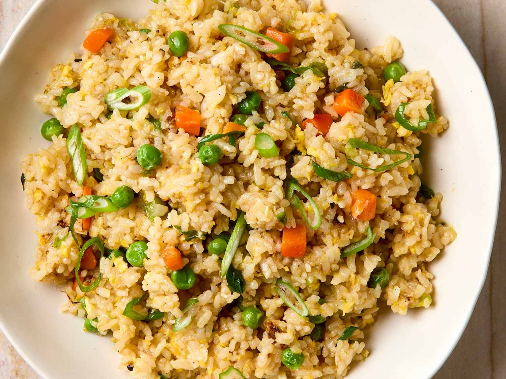
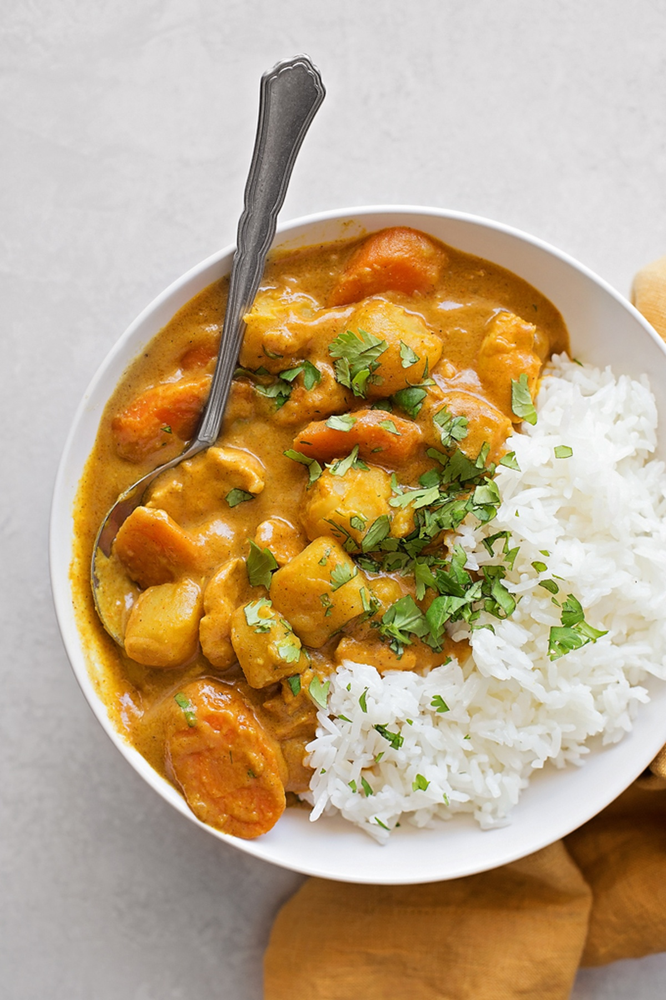

Recipes
Find the perfect meal with the ingredients you have.
Recipes you can make now

Spinach Omelette
3 ingredients · 15 mins

Egg Fried Rice
3 ingredients · 20 mins
Tomato Egg Stir-Fry
2 ingredients · 15 mins
Garlic Chicken
3 ingredients · 25 mins

Veggie Stir Fry
4 ingredients · 20 mins

Chicken Curry
5 ingredients · 30 mins